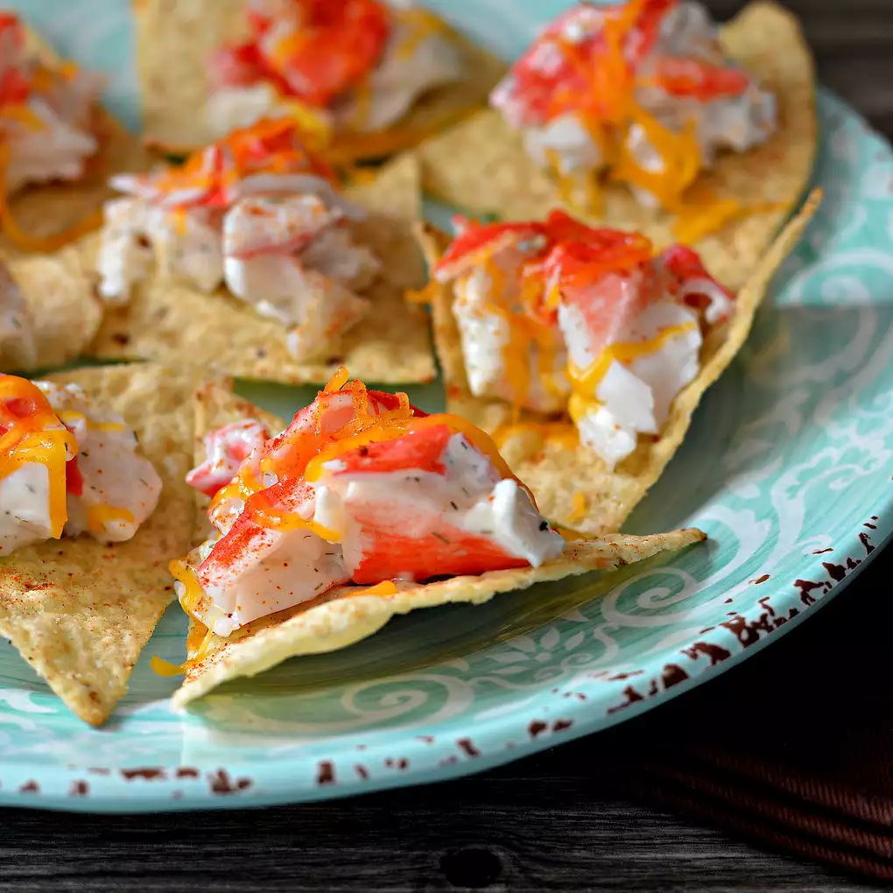

Home
Nachos Recipe

Chrystal's Seafood Nachos
Delicious nachos inspired by my favorite restaurant chain that has now closed.
Ingredients
- 30 baked tortilla chips
- 1 (8 ounce) package imitation crabmeat
- ¼ cup reduced-fat sour cream
- ¼ cup reduced-fat mayonnaise
- 2 tablespoons finely chopped onion
- ¼ teaspoon dill weed (Optional)
- ½ (8 ounce) package shredded reduced-fat Cheddar cheese
- ¼ teaspoon paprika
Directions
- Preheat oven to 350 degrees F (175 degrees C).
- Arrange tortilla chips in a single layer on an ungreased baking sheet.
- Mix imitation crabmeat, sour cream, mayonnaise, onion, and dill together in a bowl. Drop 1 tablespoonful of mixture on each chip. Sprinkle Cheddar cheese and paprika on top.
- Bake in the preheated oven until Cheddar cheese is melted, 6 to 8 minutes.